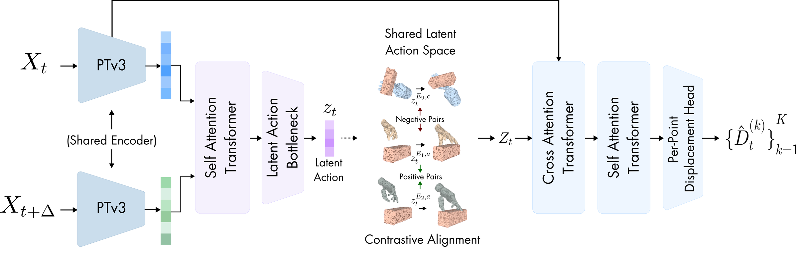

Abstract
World models facilitate planning and control in robotic manipulation by enabling agents to anticipate the consequences of their actions. However, they typically rely on action-labelled interaction data that is costly to acquire and difficult to scale. These models are also often tied to the specific embodiment they were trained on, limiting transferability to previously unseen robot morphologies. We introduce a 3D latent-action world model that learns continuous action representations directly from point-cloud observations of retargeted human manipulation demonstrations. A contrastive objective is used to encourage consistent representations of motion across embodiments. The resulting unified latent action space serves directly as the search space for model-predictive control, where sampled latent actions condition particle-based future predictions. Executable robot commands are then recovered from the predicted geometric motion without requiring an embodiment-specific action decoder. Through extensive evaluations, we demonstrate that the learned latent actions exhibit controllable and compositional motion, transfer to unseen robot embodiments, and support zero-shot manipulation with unseen gripper geometries. Following task-agnostic adaptation, our model achieves 90%, 92%, and 60% success on reaching, grasping, and placing, respectively, compared with DexWM’s reported 72%, 58%, and 28%. Finally, we demonstrate zero-shot real-world manipulation with an unseen dexterous hand, achieving an 86% success rate across 50 trials on five diverse tasks involving pushing, grasping, and lifting everyday objects. These results highlight the potential of geometry-grounded latent actions as a unified, transferable interface for world-model-based robotic manipulation.
Method

Data
Human demonstrations retargeted to eight robot hands and represented as 3D particles: the same motion, in nine embodiments.
9 embodiments92 demonstration sequences41,094 training transitions
Particles
Point flow
Explore the demonstrations in 3D
One demonstration, several embodiments. Pick a demonstration and a hand; the coloured trails show how each particle has moved over the last second.
Drag to orbit · scroll to zoom · right-drag to pan · retargeted training demonstrations (ground truth)
The latent action space
Each dot is the latent action of one transition, encoded from one of eleven robot hands. The same motion lands in the same place whichever hand performs it. Click a region to see three transitions from it on different objects, and choose the hand that performs them.
UMAP of 9,042 latent actions from held-out demonstrations · * hands unseen in training
A: a transition from the middle of the region. B, C: the two transitions closest to A in latent space that involve a different object. Retargeted demonstrations (ground truth) · drag to orbit
Results
Unseen Grippers RoboSuite · zero-shot, no fine-tuning
10 trials per task
Dexterous Manipulation RoboCasa · task-agnostic adaptation
50 episodes per task
Real World Sharpa Wave hand · zero-shot, no fine-tuning
10 trials per task
Success rate (%). DexWM: results reported by its authors. PointWorld was not evaluated on the two pushing tasks.
Latent Intervention Prediction error of moving particles · lower is better
4,000 validation windows
Search Space and Execution RoboCasa · same checkpoint and search budget
20 episodes per task
Left: mean error over the five predicted steps (mm) when the forward model is given the correct latent actions, or zero, fixed or shuffled ones; no motion predicts that nothing moves. Right: success rate (%) when the planner searches over latent actions or over robot actions, and the result is executed through the hand fit (IK) or directly.
Simulation
Dexterous Manipulation RoboCasa · Franka arm with Allegro hand · 2× speed
Reach
Grasp
Place
Gripper Manipulation RoboSuite · Franka Panda, grippers unseen during training
Reach + Push PuckWiping gripper
Push CubeWiping gripper
Milk TransportRobotiq 140
Cube StackingRobotiq 140
Real World
Dexterous Manipulation UR7e arm with Sharpa Wave hand · unseen during training, no fine-tuning
Citation
@article{dexlatentworld2026,
title = {DexLatentWorld: 3D Cross-Embodiment Latent Action World
Models for Zero-Shot Robotic Manipulation},
author = {Mohan, Vinay Udit and Huang, Xuchuan and
Potamias, Rolandos Alexandros},
journal = {arXiv preprint arXiv:XXXX.XXXXX},
year = {2026}
}